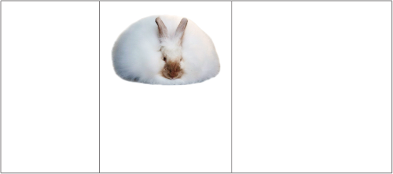
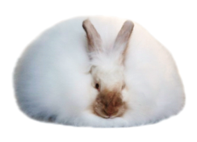

Angora

Origin: Turkey
Physical
features:
It
is
medium-sized, has long, soft
wool covering the entire body,
and requires regular grooming.
Notable traits: It is primarily
bred for its wool which is used
in making yarn. Due to its
dense fur, it requires special
care.
Principles and practices of rabbit production
The principles and practices of rabbit production include proper housing, proper
feeding, disease and parasite control, proper selection and breeding, proper
processing and marketing of livestock products and by-products, and keeping
farm records.
Selection of rabbits for farming
When starting a rabbit farming venture, selecting the right rabbit parent stock
(breeding stock) is vital for success. The following are the key factors to
consider when buying rabbit stock:
(a) Breed selection: Ensure the breed chosen is well-suited to the local climate.
Some breeds may struggle in extreme temperatures (very hot/cold). Consider
the breed’s temperament, especially if one plans to handle the rabbits
frequently or wants to raise them as pets.
(b) Health status: Purchase rabbits from a reputable breeder who can guarantee
that the rabbits are free from common diseases. Healthy rabbits should have
clear eyes, clean ears, and a glossy coat. Ask for records of vaccinations and
past medical treatments to ensure the rabbits have been appropriately cared
for. Inspect the rabbits for signs of parasites, such as fleas or mites, which
can affect their health.
(c) Age and maturity: It’s often recommended to purchase rabbits between
8 to 12 weeks old. At this age, they are weaned and can adjust to a new
environment more quickly. If buying breeding stock, ensure the rabbits are